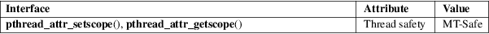

pthread_attr_setscope, pthread_attr_getscope − set/get contention scope attribute in thread attributes object
POSIX threads library (libpthread, −lpthread)
#include <pthread.h>
int
pthread_attr_setscope(pthread_attr_t *attr,
int scope);
int pthread_attr_getscope(const pthread_attr_t *restrict
attr,
int *restrict scope);
The
pthread_attr_setscope() function sets the contention
scope attribute of the thread attributes object referred to
by attr to the value specified in scope. The
contention scope attribute defines the set of threads
against which a thread competes for resources such as the
CPU. POSIX.1 specifies two possible values for scope:
PTHREAD_SCOPE_SYSTEM
The thread competes for resources with all other threads in all processes on the system that are in the same scheduling allocation domain (a group of one or more processors). PTHREAD_SCOPE_SYSTEM threads are scheduled relative to one another according to their scheduling policy and priority.
PTHREAD_SCOPE_PROCESS
The thread competes for resources with all other threads in the same process that were also created with the PTHREAD_SCOPE_PROCESS contention scope. PTHREAD_SCOPE_PROCESS threads are scheduled relative to other threads in the process according to their scheduling policy and priority. POSIX.1 leaves it unspecified how these threads contend with other threads in other process on the system or with other threads in the same process that were created with the PTHREAD_SCOPE_SYSTEM contention scope.
POSIX.1 requires that an implementation support at least one of these contention scopes. Linux supports PTHREAD_SCOPE_SYSTEM, but not PTHREAD_SCOPE_PROCESS.
On systems that support multiple contention scopes, then, in order for the parameter setting made by pthread_attr_setscope() to have effect when calling pthread_create(3), the caller must use pthread_attr_setinheritsched(3) to set the inherit-scheduler attribute of the attributes object attr to PTHREAD_EXPLICIT_SCHED.
The pthread_attr_getscope() function returns the contention scope attribute of the thread attributes object referred to by attr in the buffer pointed to by scope.
On success, these functions return 0; on error, they return a nonzero error number.
pthread_attr_setscope() can fail with the following errors:
|
EINVAL |
An invalid value was specified in scope. |
ENOTSUP
scope specified the value PTHREAD_SCOPE_PROCESS, which is not supported on Linux.
For an explanation of the terms used in this section, see attributes(7).

POSIX.1-2008.
POSIX.1-2001.
The PTHREAD_SCOPE_SYSTEM contention scope typically indicates that a user-space thread is bound directly to a single kernel-scheduling entity. This is the case on Linux for the obsolete LinuxThreads implementation and the modern NPTL implementation, which are both 1:1 threading implementations.
POSIX.1 specifies that the default contention scope is implementation-defined.
pthread_attr_init(3), pthread_attr_setaffinity_np(3), pthread_attr_setinheritsched(3), pthread_attr_setschedparam(3), pthread_attr_setschedpolicy(3), pthread_create(3), pthreads(7)